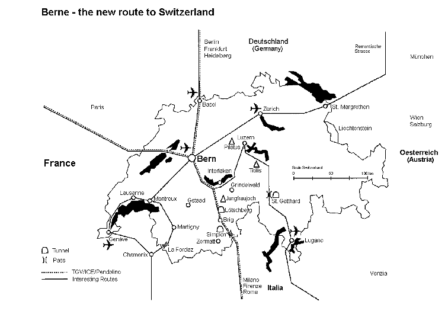

![[Bild nicht verfügbar]](assets/biblogo.png)
The fact that Berne is centrally located in Switzerland, and that Switzerland is centrally located in Europe, is very important for both congress organizers and visitors. It's always convenient to meet at a central point.
And there is the additional advantage that almost any place in Switzerland can be visited from Berne in a half-day or full-day excursion.
Stay in Berne - discover Switzerland.

Air Connections
Berne-Belp (9 km/6 miles) airport offers international connections (including Amsterdam, Brussels, Florence, Frankfurt, London, Munich, Vienna and Paris). Bus connections to the centre. There is a convenient, hourly train service ("Fly Rail") to Berne from Zurich and Geneva intercontinental airports (90 an 110 minutes respectively). These connections are included in the flight ticket (common rated). Also within easy reach is Basel airport.
These 4 airports enable every visitor easy and fast access to Berne; an advantage not to be underestimated.
Rail Connections
From Berne the traveller has direct connections with the international rail network (Italy, France, Germany, Benelux, Scandinavia, Spain, the "Chunnel"), including TGV (Paris), ICE (Frankfurt, Berlin), Pendolino-Cisalpino (Milano), Talgo (Barcelona), Euronight (Rom, Firenze), Tenda (Ventimiglia, Torino), EC Albert Einstein (Praha, Munich), EC Vauban (Bruxelles - Berne - Milano), EC Monteverdi (Venezia), EC Berner Oberland (Amsterdam), EC Matterhorn (Mannheim).
Berne is the only capital with 3 different high-speed trains; TGV, ICE and Pendolino-Cisalpino.
Road Connections
Berne, being an important motorway intersection point, has direct connections with the European E4 network. Connection routes southwards include the car trains through the Loetschberg and the Great St. Bernhard and Gotthard road tunnels.
Swiss Travel System
The Swiss Travel System offers visitors from abroad convenient public transport connections to all destinations in Switzerland, whether for transfers from and to airports and border stations, or for individual trips to discover Switzerland (e.g. travel before or after congresses).